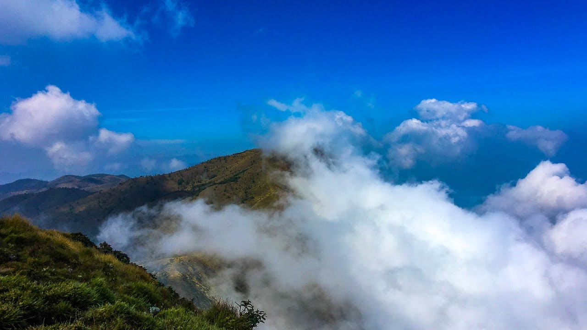

Idukki Arch Dam
The Idukki Dam is a double curvature Arch dam constructed across the Periyar River
in a narrow gorge between two granite hills locally known as Kuravan and Kurathi in Mariyapuram village in
Idukki District in Kerala, India. At 168.91 metres, it is one of the highest arch dams in Asia.
1 / 3

2 / 3

Meesapulimala
Meesapulimala is an Indian peak, the next south of the second highest peak of the Western Ghats on the Theni District, Tamil Nadu and Idukki District Kerala border. Its peak is 2,640 metres above sea level. The name derives from its appearance from the southwest of a tiger with prominent whiskers.
Meesapulimala is an Indian peak, the next south of the second highest peak of the Western Ghats on the Theni District, Tamil Nadu and Idukki District Kerala border. Its peak is 2,640 metres above sea level. The name derives from its appearance from the southwest of a tiger with prominent whiskers.
3 / 3

Munnar
Munnar is a town in the Western Ghats mountain range in India's Kerala state. A hill station and former resort for the British Raj elite, it's surrounded by rolling hills dotted with tea plantations established in the late 19th century. Eravikulam National Park, a habitat for the endangered mountain goat Nilgiri tahr, is home to the Lakkam Waterfalls, hiking trails and 2,695m-tall Anamudi Peak
Munnar is a town in the Western Ghats mountain range in India's Kerala state. A hill station and former resort for the British Raj elite, it's surrounded by rolling hills dotted with tea plantations established in the late 19th century. Eravikulam National Park, a habitat for the endangered mountain goat Nilgiri tahr, is home to the Lakkam Waterfalls, hiking trails and 2,695m-tall Anamudi Peak